Part 0: Introduction
Teachers are asked to provide different pathways for assessment, and I wanted to model this in my portfolio. As a result, I embarked on one of the most fulfilling projects of my academic career.
This project was not without hurdles; the inclusion of the hand drum presented a dilemma centering around appropriation and respect. I did not have access to an authentic hand drum and made use of a down-pitched floor tom instead.
Furthermore, I struggled to conceptualize how to present my work, ultimately settling on an interactive experience; I invite users to play with arrangement and volume to create their own educational symphony.
Teachers are asked to provide different pathways for assessment, and I wanted to model this in my portfolio. As a result, I embarked on one of the most fulfilling projects of my academic career.
This project was not without hurdles; the inclusion of the hand drum presented a dilemma centering around appropriation and respect. I did not have access to an authentic hand drum and made use of a down-pitched floor tom instead.
Furthermore, I struggled to conceptualize how to present my work, ultimately settling on an interactive experience; I invite users to play with arrangement and volume to create their own educational symphony.


Part 1: Where Do I Come From?
The accordion I am playing was left to me by my grandfather, a role model and major inspiration for me as a musician.
The accordion represents a connection to my heritage and the transmission of knowledge across generations through story and song.
The familial connection of the accordion also functions as a representation of the teachers in my family, classroom and non-classroom alike.
The accordion I am playing was left to me by my grandfather, a role model and major inspiration for me as a musician.
The accordion represents a connection to my heritage and the transmission of knowledge across generations through story and song.
The familial connection of the accordion also functions as a representation of the teachers in my family, classroom and non-classroom alike.


Part 2: Who Am I?
As my primary instrument, the acoustic guitar represents a journey of self-reflection and the exploration of my identity as a teacher.
My relationship with the guitar is one of practice, adaptation, reflection, and perpetual learning, resonating with prevalent themes throughout teaching and education.
As my primary instrument, the acoustic guitar represents a journey of self-reflection and the exploration of my identity as a teacher.
My relationship with the guitar is one of practice, adaptation, reflection, and perpetual learning, resonating with prevalent themes throughout teaching and education.


Part 3.1: Land-Based Education, and Indigenous Ways of Knowing
Both concepts are represented through using natural sounds and traditional instruments.
The sounds of Cliff Falls symbolize "learning from the Land", a topic I once viewed with irreverence. Throughout Exploration A, I fostered an appreciation of Land-based education and understood the ways in which I have always been “learning from the Land”.
The rhythmic foundation, the hand drum, is Indigenous Education, an integral part of BC schools. In a reflection of reality, its inclusion brings the instruments together, its absence leaves a sonic gap.
Both concepts are represented through using natural sounds and traditional instruments.
The sounds of Cliff Falls symbolize "learning from the Land", a topic I once viewed with irreverence. Throughout Exploration A, I fostered an appreciation of Land-based education and understood the ways in which I have always been “learning from the Land”.
The rhythmic foundation, the hand drum, is Indigenous Education, an integral part of BC schools. In a reflection of reality, its inclusion brings the instruments together, its absence leaves a sonic gap.


Part 3.2: Inclusive Education
The harmonica is the outlier among the instruments, the only one played with my breath, and not with my hands.
The harmonica does not approach music the same way as the others, but an adaptation of the melody allows it to join the chorus in a meaningful way
In fact, all the instruments participating throughout the song have different abilities and strengths.
From this perspective, entire arrangement represents a diverse and inclusive classroom.
The harmonica is the outlier among the instruments, the only one played with my breath, and not with my hands.
The harmonica does not approach music the same way as the others, but an adaptation of the melody allows it to join the chorus in a meaningful way
In fact, all the instruments participating throughout the song have different abilities and strengths.
From this perspective, entire arrangement represents a diverse and inclusive classroom.


Part 4: Where Am I Going?
The electric guitar symbolizes the role of a teacher; its melody, a fusion with the other instruments, connects the others together. As the only electric instrument, it also symbolizes exploration, discovery, and innovation.
Throughout this term I have explored what it means to be a teacher. I also examined the many ways educators embody this practice during Exploration C.
The primary focus of this project so far has been on the ethical and functional responsibilities of an educator; intersectionality, self-reflection, Indigenous education, diversity and inclusion, all things I aim to include in my practice.
But, what does Mr. Dickson look like as a teacher?
I believe creating this project has guided me towards an answer. Until now, my passion for music and academic pursuits have never intertwined. This project functions as a synthesis of self, a representation of my emerging professional identity.
The electric guitar symbolizes the role of a teacher; its melody, a fusion with the other instruments, connects the others together. As the only electric instrument, it also symbolizes exploration, discovery, and innovation.
Throughout this term I have explored what it means to be a teacher. I also examined the many ways educators embody this practice during Exploration C.
The primary focus of this project so far has been on the ethical and functional responsibilities of an educator; intersectionality, self-reflection, Indigenous education, diversity and inclusion, all things I aim to include in my practice.
But, what does Mr. Dickson look like as a teacher?
I believe creating this project has guided me towards an answer. Until now, my passion for music and academic pursuits have never intertwined. This project functions as a synthesis of self, a representation of my emerging professional identity.